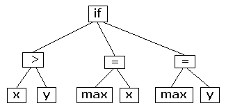
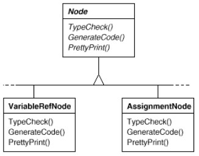
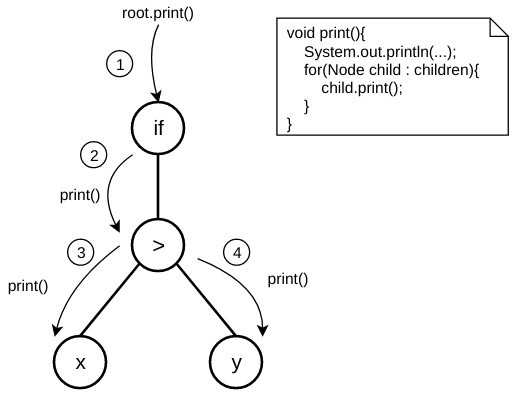
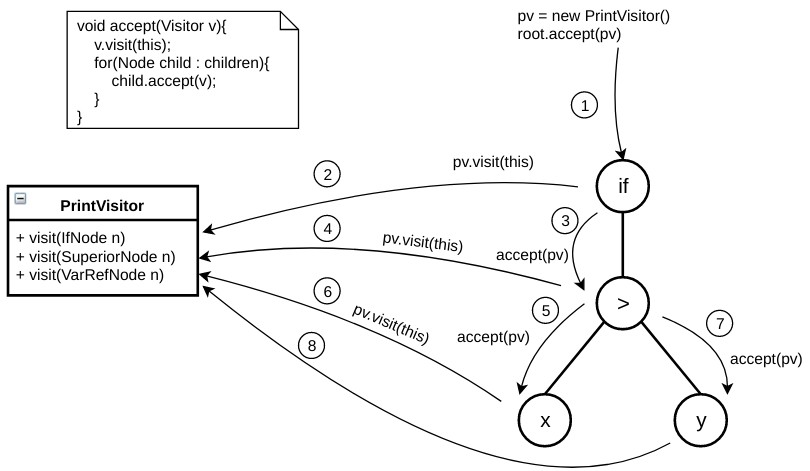
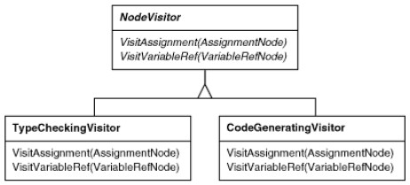
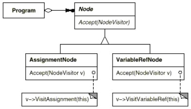
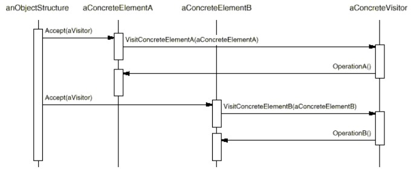

But : Représenter une opération à effectuer sur une structure d'objets.
Permet d'ajouter des opérations sans avoir à modifier les classes des objets sur lesquels il opère.
Ces opérations sont externalisées pour éviter de "polluer" les classes de la structure
Exemple : Abstract Syntax Tree (AST)
Un AST est une repésentation intermédiaire souvent utilisée lors de la compilation.Par exemple
if(x > y){
max = x;
}
else{
max = y;
}
est traduit en

Un compilateur peut avoir de nombreuses opérations à effectuer sur cet arbre : vérification du type, optimisation, génération de code... ;
l'AST peut aussi être utilisé pour faire du pretty printing, calculer des métriques sur le code.
Ces opérations ont souvent besoin d'effectuer des traitement spécifiques à chaque type d'élément (opérateur, variable, constante...).
On pourrait faire ça en ajoutant des méthodes aux classes des éléments de l'AST, que le code qui parcourt l'arbre utiliserait,
mais revient à charger les classes de nombreuses méthodes, et mélanger des fonctionnalités différentes à un même endroit :  L'idéal serait de pouvoir ajouter chaque opération indépendamment, et que les traitements ne polluent pas les classes de l'arbre.
Le pattern Visitor permet cela : chaque traitement est externalisé dans un objet, appelé visiteur, et est transmis aux éléments de l'arbre lorsqu'il est traversé.
Cela se fait par le biais d'une méthode,
accept() dans gof.
accept() est une méthode operation() du pattern Composite, dont l'exécution est propagée dans toute l'arborescence.
Lorsqu'un élément "accepte" le visiteur, il envoie une requête au visiteur contenant l'élément lui-même.
Dans cette configuration, les éléments de l'arbre n'ont qu'une méthode supplémentaire à implémenter,
accept(), pour permettre toutes les opérations possibles.
Parcours sans visiteur

Parcours avec visiteur

print().
On a le diagramme de classes suivant :


class AssignmentNode{
// ...
public accept(NodeVisitor v){
v.visitAssignment(this);
}
// ...
}
Pour que le mécanisme fonctionne,
- les élements doivent implémenter l'interface
Node, pour la méthode accept(Visitor v).
- Les visiteurs doivent implémenter une interface,
NodeVisitor, de manière à pouvoir passer tout type de visiteur à accept().
Les éléments ne connaissent pas les visiteurs, mais les visiteurs connaissent les noeuds.
Le mécanisme utilise ici une convention de nommage, par ex
visitAssignment() pour visiter un AssignmentNode.
Mais en java, on peut s'en passer en utilisant le polymorphisme ad'hoc (overriding) :
class ConcreteVisitor1 implements Visitor{
public void visit(ConcreteElementA elt){ ...}
public void visit(ConcreteElementB elt){ ...}
}
class ConcreteElementA{
public void accept(Visitor v){
v.visit(this);
}
}
Implémentation
Code dans VisitorDemo1.javaCet exemple utilise un Composite.
Remarquer qu'il y a deux méthodes
operation() : print() et accept().
Remarquer que le polymorphisme ad'hoc est utilisé.
Exercice :
A partir de l'exemple
A partir de l'exemple
VisitorDemo1 :
-
Modifiez
TypeCheckVisitorde manière à ce qu'il ne fasse rien sur unAffectationNode.
Recompilez et vérifiez que l'affichage est bien modifié. -
Supprimez la méthode
print()en la remplaçant par unPrintVisitor. -
Créez un nouveau visiteur
CodeMetricsVisitoraffichant un message similaire aux autres visiteurs. -
Modifiez
main()pour que seul ce visiteur agisse sur le composite.
=== CodeMetricsVisitor === CodeMetricsVisitor visiting IfNode : if CodeMetricsVisitor visiting SuperiorNode : > CodeMetricsVisitor visiting VariableNode : x CodeMetricsVisitor visiting VariableNode : y CodeMetricsVisitor visiting AffectationNode : = CodeMetricsVisitor visiting VariableNode : max CodeMetricsVisitor visiting VariableNode : x CodeMetricsVisitor visiting AffectationNode : = CodeMetricsVisitor visiting VariableNode : max CodeMetricsVisitor visiting VariableNode : y
Structure
Diagramme gof : Remarques :
Remarques :
- Dans ce pattern, l'abstraction (interface ou classe abstraite)
Visitor est indispensable car la méthode accept() en a besoin.
- Mais l'abstraction
Element ne l'est pas (mais elle est nécesssaire si on utilise un composite).
Diagramme de séquence : 
Remarques
- Ajouter une nouvelle opération revient à rajouter une classe implémentantVisitor.
- Le code est facilement évolutif si la structure visitée évolue peu ; si on rajoute un
ConcreteElement, il faut rajouter une méthode à chaque ConcreteVisitor, donc ce pattern n'est pas adapté aux structures qui doivent beaucoup évoluer.
- Un visiteur peut accumuler de l'information au fur et à mesure qu'il parcourt la structure.
- Ce pattern demande que les visiteurs aient accès aux informations nécessaires pour faire leur travail.
Exige donc parfois d'exposer certains détails des éléments visités, donc compromettre leur encapsulation.
Exercice Ruche : modélisation de l'activité d'une ruche en utilisant le pattern Visitor